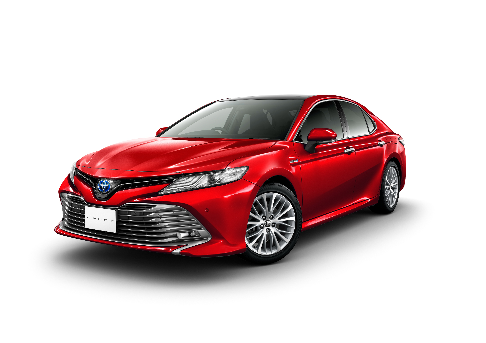

About Us

Toyota Bangladesh is the exclusive distributor of brand new Toyota vehicles. Since 1964, Navana Limited embarked on a journey with Toyota to ensure utmost customer satisfaction. Toyota Bangladesh is synonymous with Quality, Durability, and Reliability.At Toyota, we first launched our hydrogen project, recruiting engineers in-house in 1999. Although it was sailing uncharted waters, the engineers who finally gathered had a wide range of ideas and life experiences. Among the engineers who applied was one who decided to participate due to the birth of his first child. Another engineer hoped to find an outlet in the new business for a passion for energy conversion engineering, which he had studied at university